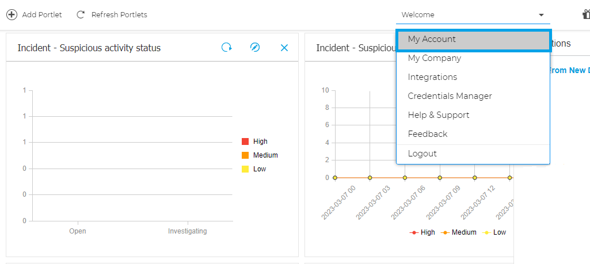
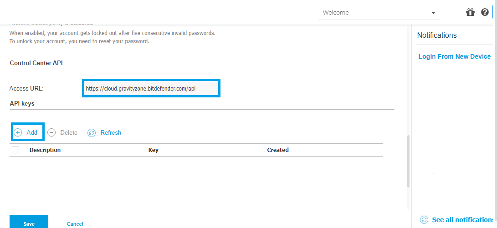
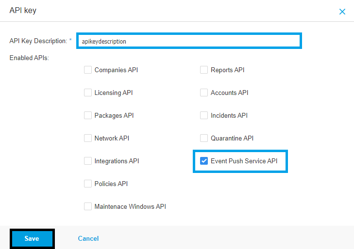
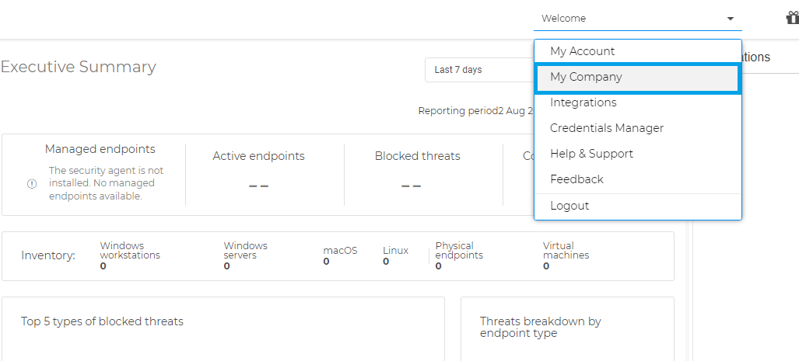

- 34.159.83.241
- 34.159.47.15
- 34.159.150.228
- 34.85.152.87
- 34.85.155.173
Get an API KEY from your Bitdefender GravityZone account
-
1 Click on "My Account"
 -
2 Scroll down to the Control Center API section, and save the Access URL that will be used in later steps. Go to the API key section and click on the Add button at the top of the table.
 -
3 Create a new API key by writing an API key description, and selecting the Event Push Service API option. Then click on the "Save" button.

Get the company IDs of your Bitdefender GravityZone account that you want to monitor.
-
4 Click on "My Company"
 -
5 Go to the "Licensing" section and save the CompanyIDs you want to monitor, which will be used in later steps

-
6 Add your Bitdefender GravityZone instances.
-
7 Click on the button shown below, to activate the UTMStack features related to this integration